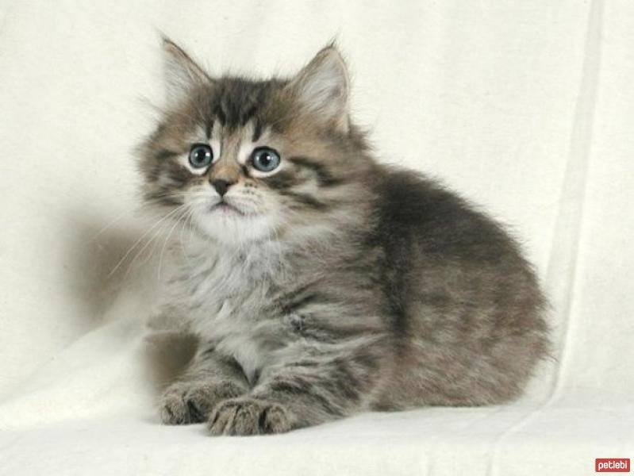
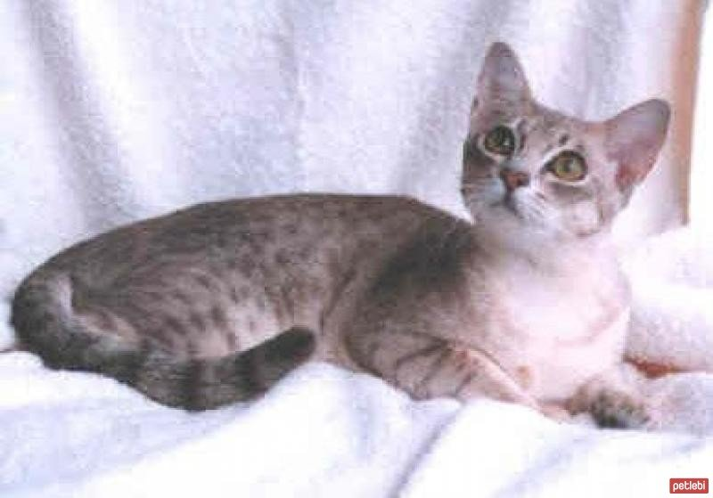

KEDİ CİNSLERİ
- Ankara Kedisi
- British Shorthair
- American Keuda
- American Bobtail 
- Australian Mist 

En eski uzun tüylü ırklardan biri olan Ankara kedisi, güzelliği ve asilliği ile karşı konulması zor cinslerden biridir. Beyaz, krem, mavi ve gümüş gibi farklı renklerdeki uzun tüyleri ipeksi bir yumuşaklığa sahiptir. Göz renkleri de farklılık gösterebilir. Kaslı ve orta büyüklükte olurlar; vücut yapıları zariftir. Uzun bir gövdeleri ve uzun bacakları vardır. Kafaları orta büyüklükte olur ve keskin hatlara sahiptir. Burun yapıları uzun ve üçgen şeklindedir. Kulakları birbirine yakın olur ve dik dururlar. Kulaklarının uçlarında ipeksi tüylerine rastlamak mümkündür. Çok havalı oldukları bilinir, yürürlerken kendilerine has bir şekilde kuyruklarını kıvırırlar ve sırtlarına doğru yatay bir şekilde konumlandırırlar. 3 yaşına geldiklerinde tüyleri en gösterişli haline gelir ve onlar yürüdükçe salınıp ışıldar. Kararlılıkları ve dikbaşlılıkları ile nam salmışlardır. Akıllarına koydukları her ne ise mutlaka amaçlarına ulaşırlar. Ailelerine karşı çok sadık olurlar ve onlarla zaman geçirmekten hoşlanırlar, istedikleri zamanlarda tabii. Birlikte yaşadıkları kişiye derin bir sevgi duyarlar ve kalabalık ailelerde özel bir durum olmazsa sadece tek bir kişiye inanılmaz derecede bağlanırlar. Normalde okşanmak onların pek hoşuna gitmese de o kişiye karşı tüm tavizlerini verebilirler. Sudan hoşlanmazlar ancak kendilerine çok ama çok özen gösterirler. Saatlerce kendilerini temizleyebilirler ve bu esnada titizlikleri ile de dikkat çekerler. Kendilerini eskisi kadar temizlemediklerinde veterinerlere danışmak gerekir. Cesaretlerinin ve zekalarının kesinlikle küçümsenmemesi gerekir. Ülkemizin ulusal hazineleri arasında gösterilen bu tür tüm dünya genelinde de sevilmektedir.

En çok sevilen ve ülkemizde de giderek popülerleşen cinslerden biridir British Shorthair. Kısa ve yumuşak tüyleri gri, mavi, lavanta, çikolata veya bunların beyaz ile karışımı renklerine sahip olabilir. "İngiliz mavisi" olarak bilinen dumanlı renkte olanlar cinsin en çok talep görenleridir. Yüzleri yuvarlak olur, bacakları kaslıdır. Genel anlamda oldukça atletik oldukları söylenebilir. Omuzları güçlü ve geniş olduğu için orantılı bir vücut yapıları vardır. Büyük ve iri gözleri dikkat çekici bir kehribarı andırır. Kuyruğu ucuna doğru daralır, kısa ve kalın bir yapıdadır. Karakterleri değişken olabilir. Yine de cinsin genel olarak davranış kalıplarından bahsedilebilir. Gün içerisinde ailelerini çok fazla meşgul etmezler ve diğer birçok cinsten farklı olarak talepleri de sınırlı olur. Sakinliği ile nam salmışlardır, ancak bazen aşırı derecede hareketli olduklarını gözlemek de mümkündür. Yaramaz olduklarını söylemek onlara haksızlık olur, tek başına kaldıklarında da sakinliklerini korurlar. Cinse mensup olanlar fazlasıyla uysaldır, onunla oyun oynanmasına bayılır. Sahibine fazla düşkün olur ve en keyif aldığı aktiviteleri onunla gerçekleştirmek ister. Onlar sürprizlerden ve aşırı hareketten uzak stabil bir yaşantı sürmeyi tercih ederler. Bu nedenle çocuklu aileler için en doğru tercih olduklarını söylemek güçtür. Apartman hayatına mükemmel derecede uyum sağlar, yaşadığı evi kendi yaşam alanı olarak benimserler.

Enerjik, dışa dönük ve oyuncu bir cins olarak bilinirler. Kedi ve köpekler ile rahatça anlaşabilirler bir kediden beklenmeyecek kadar sosyaldirler. Bu özellikleri onları kalabalık aileler için ideal bir aile üyesi haline getirir. Yalnız kalmaktan çok hoşlanmazlar ancak kendilerine özel bir alanları olmasını da isterler.
Amerikan Bobtail ırkına mensup olanlar vahşi bir görünüme sahip olurlar, sevgi doludurlar ve inanılmaz derecede akıllı oldukları bilinmektedir. Aileleri ile sıkı bağlar kurarlar ve onlarla yoğun bir etkileşim sağlarlar. Bir anda neşeli halleri ile ilgi odağı haline gelebilirler, sahiplerine şefkatle yaklaşırlar ve duygusal olarak yardıma ihtiyaçları olduğu anda onların yanında olurlar. Oyun oynamaya bayılan bu ırk bir şeyleri getirmeyi çok sever. Dolayısıyla onları hem fiziksel olarak aktif tutmak hem de mental anlamda meşgul etmek için küçük oyuncakların büyük faydaları olur. Avcılık içgüdüleri oldukça gelişmiştir ve gün içerisinde bu özelliklerine sık sık tanıklık edilebilir. Temelde sessiz bir yapıları vardır, çok sevindiklerinde hislerini titreyerek belli edebilirler. Eğitimlere pozitif yanıt verirler ve tasmayla dışarıda gezmeyi de çok severler. Diğer insanlara, kedilere ve köpeklere karşı da ılıman yaklaşım sergilerler.
Çocuklarla çok iyi anlaşmaları, diğer evcil hayvanlarla sosyalleşebilmeleri onları kalabalık aileler için ideal seçim haline getirir. Oldukça aktif hayvanlardır ve enerjileri yüksektir. Yavruluk dönemlerinde daha enerjiktirler, yaşları ilerledikçe sakinleşirler. Dış dünya ile çok ilgilenmezler ve evde olmaktan keyif alırlar. Yalnız kalmayı tolere edebilirler. Ancak uzun süreli yalnızlıkları tercih etmezler. Yetişkinleri emekliler ya da aktif yaşamayanlar için daha uygun bir yoldaştır.